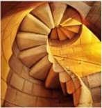
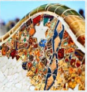
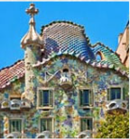
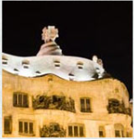

Gaudi
The voices of Barcelona blur in a mix of Spanish and Catalan in much the way Gaudi's work blurs the
lines between architecture and artwork.
From the tiled benches in Guell Park to the towers over Casa Mila and Casa Battló, I fell in love with
Goudi's work on my first trip to Barcelona.

Park Guell
The benches as Lizard fountain in Park Guell make up part of the UNESCO World Heritage Site know as,
"The Works of Antonio Gaudi."
The park features Gaudi's famous Lizard Fountain, as well as benches and other extraordinary examples of
Gaudi's talent with tiles.

Casa Batlló
The first time I strolled down the Passeig de Grácia (Catalan for the Promenade of Grace), I stopped in
my tracks in front of Gaudi's Casa Batlló.
The 'house,' wedged between two 'normal' buildings, looks more like a giant sculpture than any house l'd
ever seen anywhere else.

Casa Mila
A popular attraction in Barcelona, Casa Mila, also known as La Pedrera, is arguably one of the most
famous buildings designed by Gaudi.
The roof features a collection of chimneys and towers that like they'd fit right in as characters in a
Dr. Suess book.
